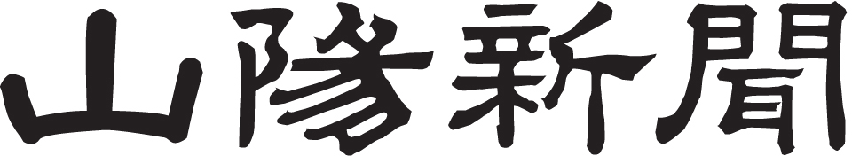

長
長岡高専
眞野航輔
PARTNERS / ACCELERATORS / INTERVIEW



高専生と企業をつなぎ、実践の場と新しい価値を生み出すプラットフォーム
Problem
必要なエンジニアを採用するまでに時間がかかっている
社内DXや業務効率化が後回しになっている
MVP開発の見積もりや対応範囲が分からない
外部パートナーとの進行管理に負担がかかっている
高専生による企業からの案件受託
企業コーポレートサイト
HP診断サービス

神山まるごと高専 デザインエンジニアリング学科1年
「隣の高専生」代表。岡山県出身の16歳。
ミライノピッチ3部門受賞、なんチャレ2025最優秀賞、Akatsukiプロジェクト採択など、
高専生として積極的に事業開発・技術開発に取り組む。
地域課題解決や次世代エンジニア育成にも注力し、全国の高専生をつなぐネットワークを構築中。
各高専から選りすぐりのエンジニアが、御社のプロジェクトをサポートします。
ポートフォリオを見る ↗
奥河董馬
ポートフォリオを見る ↗
中山亮佑
ポートフォリオを見る ↗
小田空音
ポートフォリオを見る ↗
中野楽士
ポートフォリオを見る ↗
中本慧思
長岡高専
眞野航輔
神山まるごと高専
中本怜祐
香川高専 詫間キャンパス
岡崎春一
香川高専 高松キャンパス
宮武幸人
広島商船高専
坂口拓海
鳥羽商船高専
阪本拓海
大島商船高専
縄田嵐
呉高専
西岡丈
高知高専
片岡勇登
隣の高専生の最新の事業紹介資料をご覧いただけます。
PDFが表示されない場合はこちらからダウンロードしてください。
CONTACT
ご相談・打ち合わせをご希望の方は、以下の予約フォームから空いている日時をお選びください。